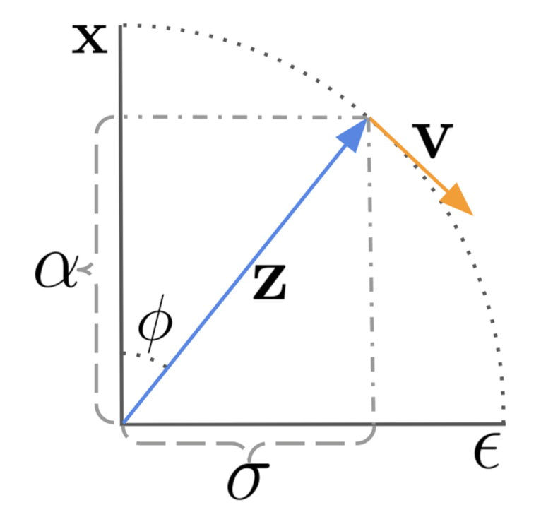
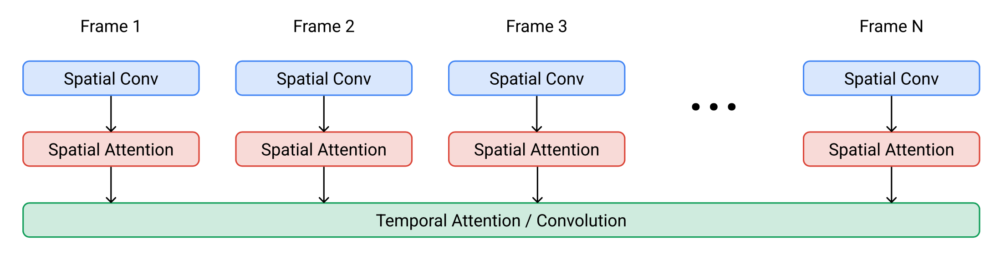
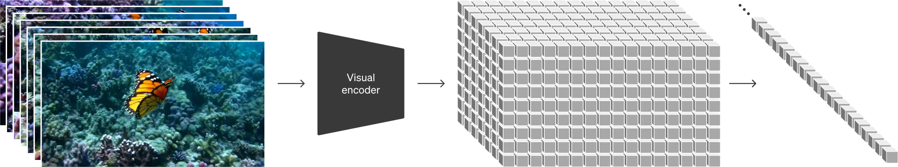
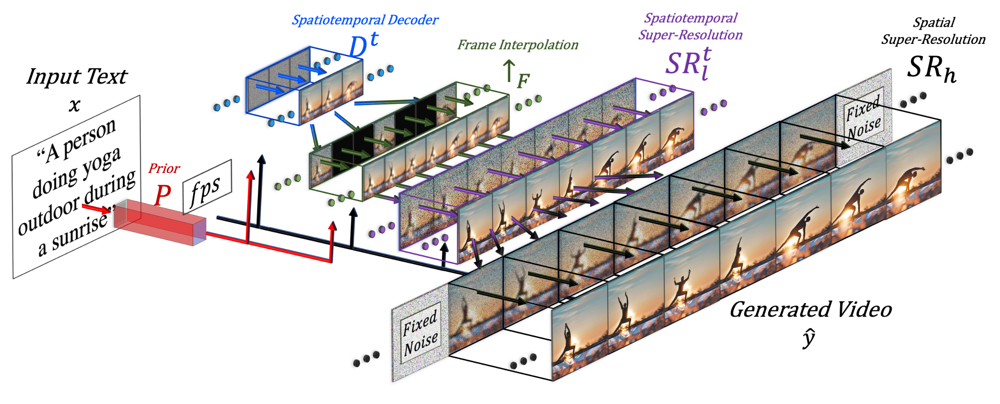
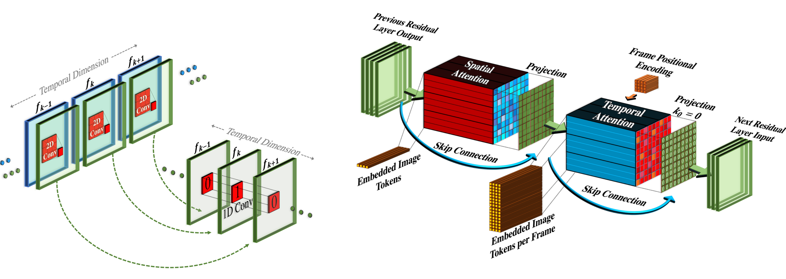
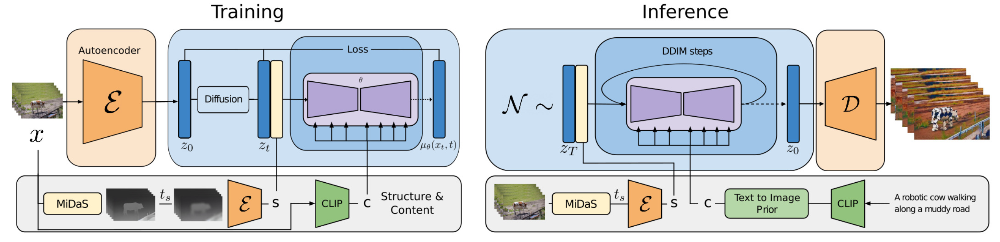
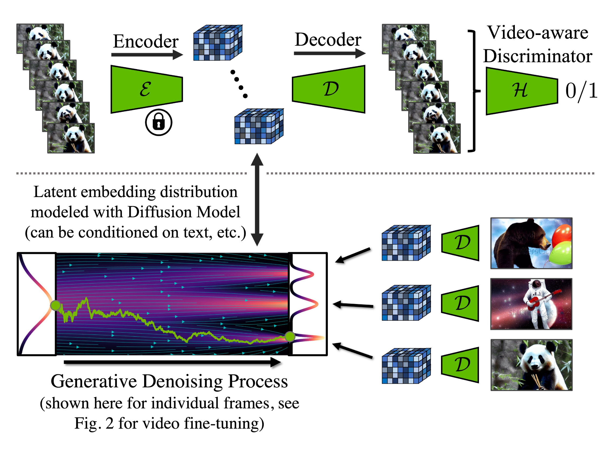
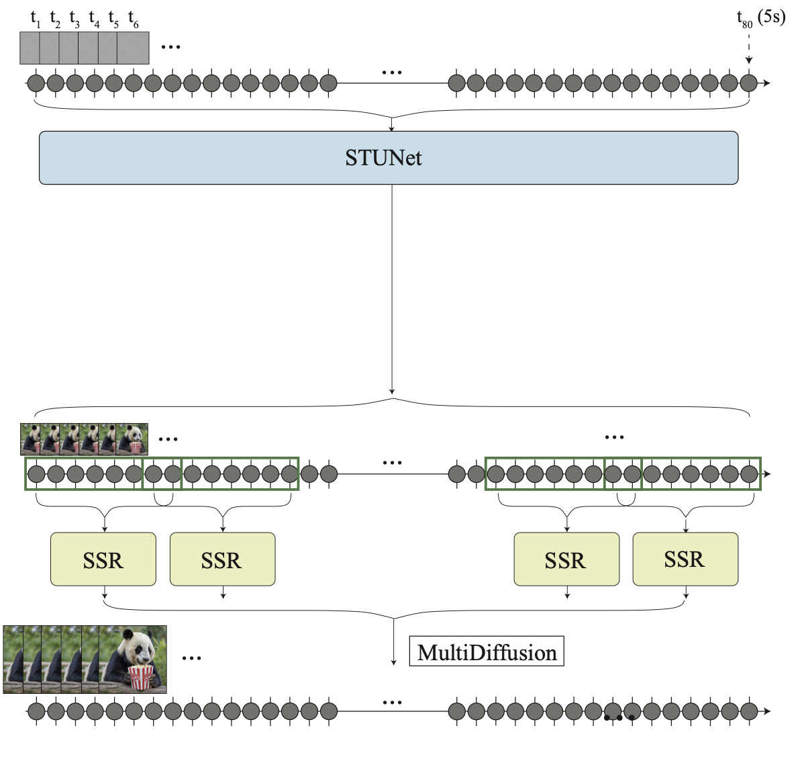
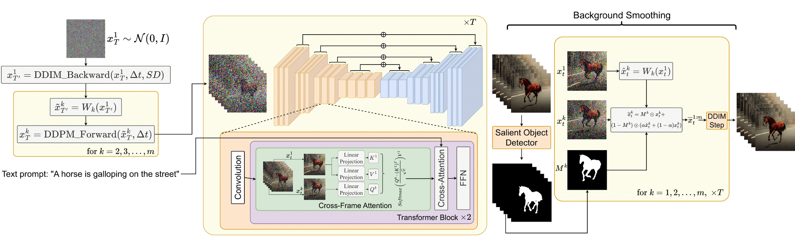
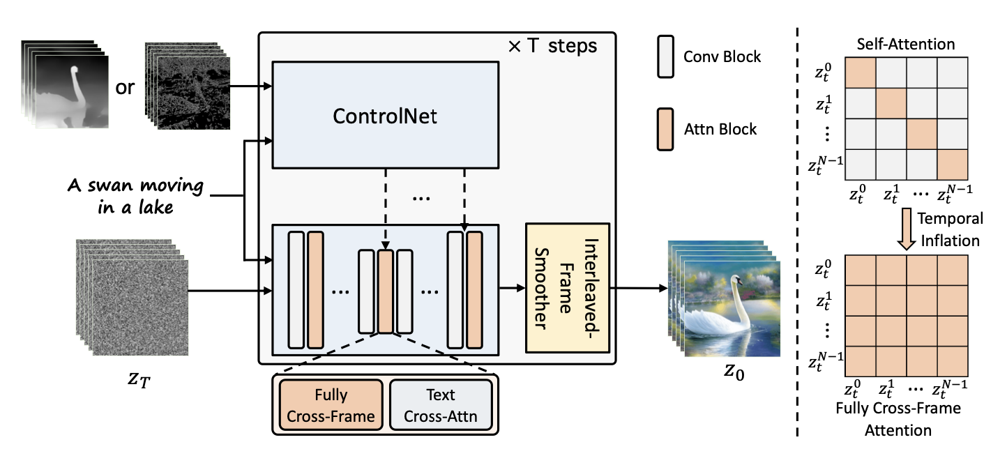

目录
- Video Generation Modeling from Scratch Parameterization & Sampling Basics Model Architecture: 3D U-Net & DiT
- Adapting Image Models to Generate Videos Fine-tuning on Video Data Training-Free Adaptation
- Citation
- References
在过去几年已在图像合成领域展现出强大能力。如今，研究社区已开始攻克更具挑战性的任务——将其用于视频生成。该任务本质上是图像生成任务的超集（因为单帧图像可视为长度为 1 的视频），但难度显著更高，原因如下：什么是扩散模型？
- 它对帧间时序一致性有额外要求，这自然需要模型编码更多世界知识。
- 与文本或图像相比，收集大量高质量、高维度视频数据更加困难，更不用说文本-视频配对数据了。
🥑 预备阅读：请确保在继续阅读前已读过前一篇关于用于图像生成的文章。什么是扩散模型？
从零开始构建视频生成模型#
首先我们回顾从零开始设计和训练扩散视频模型的方法，即不依赖于任何预训练的图像生成器。
参数化与采样基础#
这里我们采用与略有不同的变量定义，但数学本质保持不变。令\mathbf{x} \sim q_\text{real}是从真实数据分布中采样的数据点。我们逐步在时间上加入少量高斯噪声，生成\mathbf{x}的一系列带噪版本，记为\{\mathbf{z}_t \mid t =1 \dots, T\}，随着t增大，噪声量不断增加，直至最后一个q(\mathbf{z}_T) \sim \mathcal{N}(\mathbf{0}, \mathbf{I})。这个加噪的前向过程是一个高斯过程。令\alpha_t, \sigma_t定义该高斯过程的可微噪声调度：什么是扩散模型？
对于0 \leq s < t \leq T，q(\mathbf{z}_t \vert \mathbf{z}_s)可表示为：
令对数信噪比为\lambda_t = \log[\alpha^2_t / \sigma^2_t]，则 DDIM（Song et al. 2020）更新可写为：
存在一种特殊的\mathbf{v}-预测（\mathbf{v} = \alpha_t \boldsymbol{\epsilon} - \sigma_t \mathbf{x}）参数化方法，由Salimans & Ho (2022)提出。与\boldsymbol{\epsilon}-参数化相比，它能更好地避免视频生成中的颜色偏移问题。
\mathbf{v}-参数化是通过角坐标上的一个技巧推导而来。首先定义\phi_t = \arctan(\sigma_t / \alpha_t)，由此可得\alpha_\phi = \cos\phi, \sigma_t = \sin\phi, \mathbf{z}_\phi = \cos\phi \mathbf{x} + \sin\phi\boldsymbol{\epsilon}。\mathbf{z}_\phi的速度可写为：
进而可推导出：
相应的 DDIM 更新规则变为：

模型的\mathbf{v}-参数化目标是预测\mathbf{v}_\phi = \cos\phi\boldsymbol{\epsilon} -\sin\phi\mathbf{x} = \alpha_t\boldsymbol{\epsilon} - \sigma_t\mathbf{x}。
在视频生成场景中，扩散模型需要执行多次上采样步骤来延长视频长度或提高帧率。这要求模型能够基于第一个视频\mathbf{x}^a采样出第二个视频\mathbf{x}^b，即\mathbf{x}^b \sim p_\theta(\mathbf{x}^b \vert \mathbf{x}^a)，其中\mathbf{x}^b可以是\mathbf{x}^a的自回归扩展，也可以是低帧率视频\mathbf{x}^a中缺失的中间帧。
\mathbf{x}_b的采样除了依赖自身对应的噪声变量外，还需以\mathbf{x}_a为条件。Video Diffusion Models（VDM；Ho & Salimans, et al. 2022）提出了重构引导方法，通过调整去噪模型，使得\mathbf{x}^b的采样能够正确地以\mathbf{x}^a为条件：
其中\hat{\mathbf{x}}^a_\theta (\mathbf{z}_t), \hat{\mathbf{x}}^b_\theta (\mathbf{z}_t)是由去噪模型提供的\mathbf{x}^a, \mathbf{x}^b的重构结果。w_r是一个权重因子，较大的w_r >1有助于提升样本质量。值得注意的是，使用同样的重构引导方法，也可以同时以低分辨率视频为条件，将样本扩展到高分辨率。
模型架构：3D U-Net 与 DiT#
与文本到图像的扩散模型类似，U-Net 和 Transformer 仍是两种。Google 有一系列基于 U-Net 架构的扩散视频建模论文，而 OpenAI 最近发布的 Sora 模型则采用了 Transformer 架构。什么是扩散模型？
VDM（Ho & Salimans, et al. 2022）采用了标准的扩散模型设置，但对架构进行了适合视频建模的修改。它将扩展到处理 3D 数据（Cicek et al. 2016），其中每个特征图是一个帧×高×宽×通道的 4D 张量。该 3D U-Net 在空间和时间上进行因子分解，即每一层仅作用于空间或时间维度，而非同时作用于两者：什么是扩散模型？
- Processing Space: Each old 2D convolution layer as in the 2D U-net is extended to be space-only 3D convolution; precisely, 3x3 convolutions become 1x3x3 convolutions. Each spatial attention block remains as attention over space, where the first axis (frames) is treated as batch dimension.
- Processing Time: A temporal attention block is added after each spatial attention block. It performs attention over the first axis (frames) and treats spatial axes as the batch dimension. The Transformer 家族 2.0 版 embedding is used for tracking the order of frames. The temporal attention block is important for the model to capture good temporal coherence.

Imagen Video（Ho, et al. 2022）构建在一个扩散模型级联之上，以提升视频生成质量，并升级至输出 1280×768 分辨率、24 fps 的视频。Imagen Video 架构包含以下组件，总共 7 个扩散模型。
- 一个冻结的通用语言模型文本编码器，用于提供文本嵌入作为条件输入。
- 一个基础视频扩散模型。
- 一系列交替的空间和时间超分辨率扩散模型，包括 3 个 TSR（Temporal Super-Resolution）和 3 个 SSR（Spatial Super-Resolution）组件。

基础去噪模型使用共享参数同时对所有帧进行空间操作，随后时间层对帧间的激活进行混合，以更好地捕捉时序一致性。这种方式被证明优于逐帧自回归方法。

SSR 和 TSR 模型均以通道拼接方式将上采样后的输入与带噪数据\mathbf{z}_t拼接作为条件。SSR 通过双线性插值进行上采样，而 TSR 则通过重复帧或填充空白帧实现上采样。
Imagen Video 还应用了来加速采样，每次蒸馏迭代可将所需采样步数减半。其实验将全部 7 个视频扩散模型都蒸馏至每个模型仅需 8 个采样步，且感知质量无明显损失。什么是扩散模型？
为了实现更好的扩展性，Sora（Brooks et al. 2024）采用了什么是扩散模型？架构，在视频和图像潜码的时空 patch 上进行操作。视觉输入被表示为一系列时空 patch，作为 Transformer 的输入 token。

将图像模型适配为视频生成模型#
另一个显著的扩散视频建模方法是将预训练的文本到图像扩散模型“膨胀”，插入时间层，随后可以选择仅在视频数据上微调新增层，或完全避免额外训练。新模型继承了文本-图像对的先验知识，从而减轻了对文本-视频配对数据的需求。
在视频数据上微调#
Make-A-Video（Singer et al. 2022）通过增加时间维度来扩展预训练的扩散图像模型，由三个关键组件构成：
- 一个在文本-图像配对数据上训练的基础文本到图像模型。
- 时空卷积和注意力层，用于将网络扩展至时间维度。
- 一个用于高帧率生成的帧插值网络。

最终的视频推理过程可表述为：
其中：
- \mathbf{x}是输入文本。
- \hat{\mathbf{x}}是经过 BPE 编码的文本。
- \text{CLIP}_\text{text}(.)是 CLIP 文本编码器，\mathbf{x}_e = \text{CLIP}_\text{text}(\mathbf{x})。
- P(.)是先验模型，根据文本嵌入\mathbf{x}_e和 BPE 编码文本\hat{\mathbf{x}}生成图像嵌入\mathbf{y}_e：\mathbf{y}_e = P(\mathbf{x}_e, \hat{\mathbf{x}})。该部分在文本-图像配对数据上训练，未在视频数据上微调。
- D^t(.)是时空解码器，生成 16 帧低分辨率 64×64 RGB 图像\hat{\mathbf{y}}_l。
- \uparrow_F(.)是帧插值网络，通过在生成帧之间进行插值来提高有效帧率。这是一个针对预测视频上采样中掩码帧任务进行微调的模型。
- \text{SR}_h(.), \text{SR}^t_l(.)是空间和时空超分辨率模型，分别将分辨率提升至 256×256 和 768×768。
- \hat{\mathbf{y}}_t是最终生成的视频。
时空 SR 层包含伪 3D 卷积层和伪 3D 注意力层：
- 伪 3D 卷积层：每个来自预训练图像模型的空间 2D 卷积层后面跟着一个时间 1D 层（初始化为恒等函数）。概念上，2D 卷积层先生成多帧图像，随后将这些帧重塑为视频片段。
- 伪 3D 注意力层：在每个（预训练的）空间注意力层之后堆叠一个时间注意力层，用于近似完整的时空注意力层。

它们可表示为：
其中输入张量\mathbf{h} \in \mathbb{R}^{B\times C \times F \times H \times W}（对应 batch size、channels、frames、height 和 width）；\circ T在时序和空间维度间进行转置；\text{flatten}(.)是一个矩阵算子，用于将\mathbf{h}转换为\mathbf{h}’ \in \mathbb{R}^{B \times C \times F \times HW}，而\text{flatten}^{-1}(.)则进行逆操作。
训练过程中，Make-A-Video 流程的不同组件是独立训练的。
- 解码器D^t、先验P和两个超分辨率组件\text{SR}_h, \text{SR}^t_l首先仅在图像上训练，不使用配对文本。
- 随后加入新的时间层（初始化为恒等函数），并在无标签视频数据上进行微调。
Tune-A-Video（Wu et al. 2023）通过膨胀预训练的图像扩散模型，实现单样本视频微调：给定一个包含m帧的视频\mathcal{V} = \{v_i \mid i = 1, \dots, m\}，配以描述性提示\tau，任务是根据略作修改且相关的文本提示\tau^*生成新的视频\mathcal{V}^*。例如，\tau = "A man is skiing" 可以扩展为\tau^*="Spiderman is skiing on the beach"。Tune-A-Video 适用于物体编辑、背景更换和风格迁移等任务。
除了膨胀 2D 卷积层，Tune-A-Video 的 U-Net 架构还加入了 ST-Attention（时空注意力）块，通过查询前帧的相关位置来捕捉时序一致性。给定第v_i帧的潜在特征，将前帧v_{i-1}和第一帧v_1投影为 query \mathbf{Q}、key \mathbf{K}和 value \mathbf{V}，ST-Attention 定义如下：

Runway 的 Gen-1 模型（Esser et al. 2023）的目标是根据文本输入编辑给定的视频。它将视频p(\mathbf{x} \mid s, c)的结构和内容分开考虑以进行生成条件控制。然而，要清晰地分解这两个方面并不容易。
- 内容c指视频的外观和语义，从文本中采样得到，用于条件编辑。帧的 CLIP 嵌入是内容的良好表示，且与结构特征基本正交。
- 结构s描绘几何形状和动态，包括物体的形状、位置、时序变化等，从输入视频中采样得到。深度估计或其他任务特定的辅助信息（例如人体姿态或人脸关键点）均可使用。s
Gen-1 的架构改动较为标准，即在残差块的每个 2D 空间卷积层后添加 1D 时间卷积层，并在注意力块的每个 2D 空间注意力层后添加 1D 时间注意力块。训练时，结构变量s与扩散潜在变量\mathbf{z}拼接，而内容变量c则通过 cross-attention 层提供。在推理时，CLIP 嵌入通过一个先验模型从 CLIP 文本嵌入转换为 CLIP 图像嵌入。

Video LDM（Blattmann et al. 2023）首先训练一个什么是扩散模型？（Latent Diffusion Models）图像生成器，随后在加入时间维度后对模型进行微调以生成视频。微调仅针对新增的时间层，在编码后的图像序列上进行。Video LDM 中的时间层\{l^i_\phi \mid i = \ 1, \dots, L\}（见图 10）与现有的空间层l^i_\theta交替出现，后者在微调期间保持冻结。也就是说，我们仅微调新增参数\phi，而不更新预训练的图像主干网络参数\theta。Video LDM 的流程首先以低帧率生成关键帧，随后经过两步潜在帧插值来提高帧率。
长度为T的输入序列被解释为基础图像模型\theta的一批图像（即B \cdot T），随后被重塑为视频格式输入给l^i_\phi时间层。存在一个跳跃连接，通过一个可学习的融合参数\alpha将时间层输出\mathbf{z}’与空间输出\mathbf{z}进行融合。实际中实现了两类时间混合层：(1) 时间注意力；(2) 基于 3D 卷积的残差块。

然而，LDM 的预训练自编码器仅见过图像而非视频，直接用于视频生成可能导致闪烁 artifact 和较差的时序一致性。因此 Video LDM 在解码器中额外加入时间层，并在视频数据上进行微调，同时使用基于 3D 卷积的 patch-wise 时间判别器，而编码器保持不变，以便复用预训练的 LDM。在时间解码器微调期间，冻结的编码器对视频中每一帧进行独立处理，并通过一个视频感知判别器强制跨帧实现时序一致的重构。

与 Video LDM 类似，Stable Video Diffusion（SVD；Blattmann et al. 2023）的架构设计也基于 LDM，在每个空间卷积和注意力层之后插入时间层，但 SVD 会对整个模型进行微调。训练视频 LDM 有三个阶段：
- 文本到图像的预训练非常重要，有助于提升质量和提示词遵循能力。
- 视频预训练最好单独进行，且应在更大规模、精心整理的数据集上完成。
- 高质量视频微调则使用规模较小、已标注字幕且视觉保真度高的视频。
SVD 特别强调数据集整理对模型性能的关键作用。他们采用切变检测流程以获得更多视频切片，随后使用三种不同的字幕模型：(1) CoCa 用于中间帧；(2) V-BLIP 用于视频字幕；(3) 基于前两种字幕的 LLM 字幕生成。随后他们继续优化视频数据集，移除运动较少的片段（通过 2 fps 计算的光流分数过滤）、文本过多（使用 OCR 识别含大量文字的视频）或整体美学价值低的片段（使用 CLIP 嵌入对每段视频首、中、尾帧进行标注，并计算美学分数与文本-图像相似度）。实验表明，经过过滤的高质量数据集即使规模更小，也能带来更好的模型质量。
先生成远距离关键帧，再通过时间超分辨率进行插值的核心挑战是如何保持高质量的时序一致性。Lumiere（Bar-Tal et al. 2024）则采用时空 U-Net（STUNet）架构，在单次前向传播中一次性生成整个视频的时序长度，从而去除了对 TSR（temporal super-resolution）组件的依赖。STUNet 在时间和空间两个维度上对视频进行下采样，因此昂贵的计算发生在紧凑的时空潜在空间中。

STUNet 将预训练的文本到图像 U-Net 膨胀，使其能够在时间和空间两个维度上对视频进行下采样和上采样。基于卷积的块由预训练的文本到图像层组成，随后接因子分解的时空卷积。在最粗糙的 U-Net 层级上，基于注意力的块包含预训练的文本到图像层，随后接时间注意力。进一步的训练仅针对新增的层进行。

无需训练的适配方法#
令人惊讶的是，我们可以无需任何训练就能将预训练的文本到图像模型适配为输出视频🤯。
如果我们简单地随机采样一系列潜在码，然后将对应的解码图像拼接成视频，无法保证物体和语义在时间上的一致性。Text2Video-Zero（Khachatryan et al. 2023）通过在预训练图像扩散模型中加入两个关键机制，实现零样本、无需训练的视频生成，以保证时序一致性：
- 使用带有运动动态的潜在码序列进行采样，以保持全局场景和背景在时间上的一致；
- 使用新的跨帧注意力机制对帧级自注意力进行重编程，每个帧都参考第一帧，从而保留前景物体的上下文、外观和身份。

带运动信息的潜在变量序列\mathbf{x}^1_T, \dots, \mathbf{x}^m_T的采样过程如下：
- 定义一个方向\boldsymbol{\delta} = (\delta_x, \delta_y) \in \mathbb{R}^2来控制全局场景和相机运动；默认值为\boldsymbol{\delta} = (1, 1)。同时定义一个超参数\lambda > 0来控制全局运动的强度。
- 首先随机采样第一帧的潜在码\mathbf{x}^1_T \sim \mathcal{N}(0, I)；
- 使用预训练的图像扩散模型（例如论文中的 Stable Diffusion 模型）执行\Delta t \geq 0步 DDIM 反向更新，得到对应的潜在码\mathbf{x}^1_{T’}，其中T’ = T - \Delta t。
- 对潜在码序列中的每一帧，应用对应的运动平移，通过\boldsymbol{\delta}^k = \lambda(k-1)\boldsymbol{\delta}定义的扭曲操作得到\tilde{\mathbf{x}}^k_{T’}。
- 最后对所有\tilde{\mathbf{x}}^{2:m}_{T’}执行 DDIM 前向步骤，得到\mathbf{x}^{2:m}_T。
此外，Text2Video-Zero 将预训练 SD 模型中的自注意力层替换为参考第一帧的新型跨帧注意力机制。其动机是让前景物体的外观、形状和身份信息在整个生成视频中保持一致。
可选地，可以使用背景掩码进一步平滑并提升背景一致性。假设我们使用现有方法获得第k帧的前景掩码\mathbf{M}_k，则背景平滑在扩散步骤t处，依据背景矩阵对实际潜在码与扭曲后的潜在码进行融合：
其中\mathbf{x}^k_t是实际的潜在码，\tilde{\mathbf{x}}^k_t是背景上的扭曲潜在码；\alpha是一个超参数，论文实验中设为\alpha=0.6。
Text2Video-Zero 可以与什么是扩散模型？结合使用，其中 ControlNet 的预训练拷贝分支在每个扩散时间步t = T , \dots, 1中，对每个\mathbf{x}^k_t的k = 1, \dots, m按帧应用，并将其输出加到主 U-Net 的跳跃连接中。
ControlVideo（Zhang et al. 2023）的目标是根据文本提示\tau和运动序列（例如深度或边缘图）\mathbf{c} = \{c^i\}_{i=0}^{N-1}生成视频。它基于什么是扩散模型？进行适配，并加入了三种新机制：
- 跨帧注意力：在自注意力模块中加入完全的跨帧交互。它将所有时间步的潜在帧映射为\mathbf{Q}, \mathbf{K}, \mathbf{V}矩阵，实现所有帧之间的交互，这与 Text2Video-Zero 中所有帧仅关注第一帧的设定不同。
- 交替帧平滑器：通过在交替帧上进行帧插值来减少闪烁效应。在每个时间步t，平滑器对偶数或奇数帧进行插值，以平滑对应的三帧片段。注意经过平滑步骤后，帧数会随时间减少。
- 层次采样器：利用层次采样器在显存限制下生成长视频并保持时序一致性。将长视频拆分为多个短片段，每个片段选择一个关键帧。模型使用完全跨帧注意力预先生成这些关键帧以保证长时一致性，随后依次基于关键帧生成对应的短片段。

引用#
引用格式：
Weng, Lilian. (Apr 2024). Diffusion Models Video Generation. Lil’Log. https://lilianweng.github.io/posts/2024-04-12-diffusion-video/.
@article{weng2024video,
title = "Diffusion Models Video Generation.",
author = "Weng, Lilian",
journal = "lilianweng.github.io",
year = "2024",
month = "Apr",
url = "https://lilianweng.github.io/posts/2024-04-12-diffusion-video/"
}
参考文献#
[1] Cicek et al. 2016. “3D U-Net: Learning Dense Volumetric Segmentation from Sparse Annotation.”
[2] Ho & Salimans, et al. “Video Diffusion Models.” 2022 | webpage
[3] Bar-Tal et al. 2024 “Lumiere: A Space-Time Diffusion Model for Video Generation.”
[4] Brooks et al. “Video generation models as world simulators.” OpenAI Blog, 2024.
[5] Zhang et al. 2023 “ControlVideo: Training-free Controllable Text-to-Video Generation.”
[6] Khachatryan et al. 2023 “Text2Video-Zero: Text-to-image diffusion models are zero-shot video generators.”
[7] Ho, et al. 2022 “Imagen Video: High Definition Video Generation with Diffusion Models.”
[8] Singer et al. “Make-A-Video: Text-to-Video Generation without Text-Video Data.” 2022.
[9] Wu et al. “Tune-A-Video: One-Shot Tuning of Image Diffusion Models for Text-to-Video Generation.” ICCV 2023.
[10] Blattmann et al. 2023 “Align your Latents: High-Resolution Video Synthesis with Latent Diffusion Models.”
[11] Blattmann et al. 2023 “Stable Video Diffusion: Scaling Latent Video Diffusion Models to Large Datasets.”
[12] Esser et al. 2023 “Structure and Content-Guided Video Synthesis with Diffusion Models.”
[13] Bar-Tal et al. 2024 “Lumiere: A Space-Time Diffusion Model for Video Generation.”